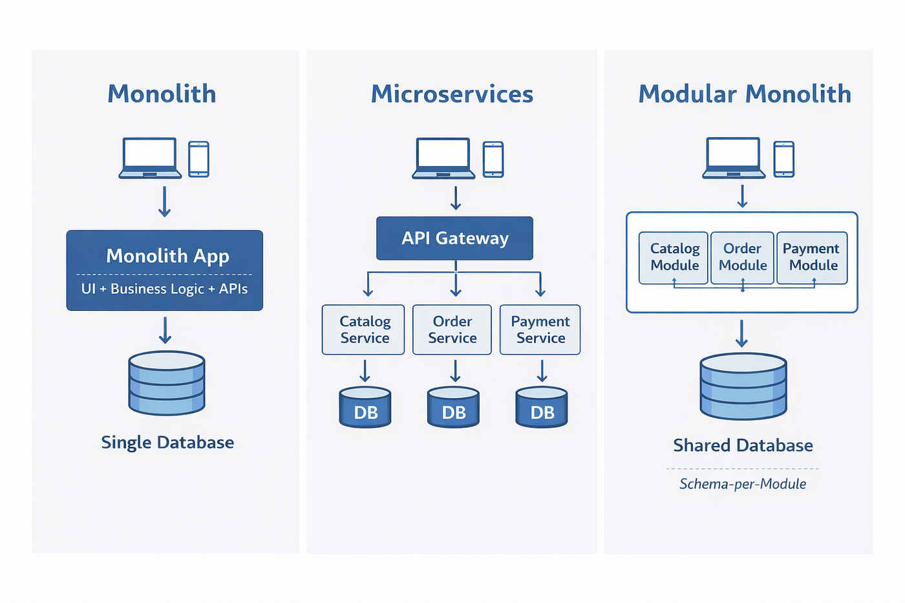
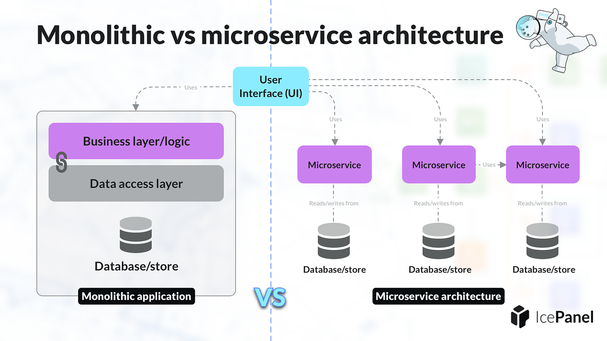
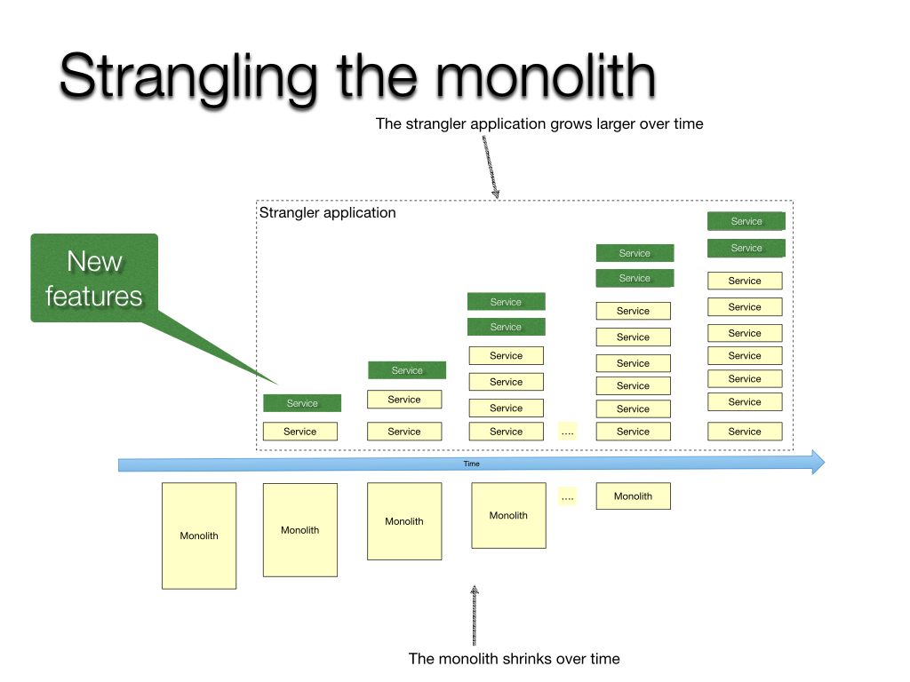

System Design Mastery
Master scalable systems with premium insights
🏗️ Monolithic vs Microservices
📚 Quick Navigation
🔹 1. What is Monolithic Architecture?
Entire application is built and deployed together as single unit
🧠 Structure:
- One codebase
- One deployment
- One backend service
- One database
📌 Example: E-commerce Monolith
Inside one application:
- User module
- Order module
- Payment module
- Inventory module
👉 All tightly connected

🏗️ Monolithic Architecture Structure
✅ Advantages
- Simple to build & deploy
👉 One codebase, one deployment - Easy debugging & testing
👉 Everything is in one place - Better performance (initially)
👉 No network calls between services
❌ Disadvantages
- Tight coupling
👉 One change can affect entire system - Hard to scale
👉 Must scale whole app, not parts - Slow deployments
👉 Small change = full redeploy - Single point of failure
👉 One bug can crash entire system
🔹 2. What is Microservices Architecture?
Application is split into multiple independent services
🧠 Structure:
- Multiple services (User, Payment, Order, etc.)
- Each service:
- Has its own logic
- Can be deployed independently
- Often has its own database
✅ Advantages
- Independent scaling
👉 Scale only what is needed - Loose coupling
👉 Services are independent - Fault isolation
👉 One service failure doesn't break entire system - Technology flexibility
👉 Different services can use different stacks
❌ Disadvantages
- High complexity
👉 Distributed system challenges - Network latency
👉 Service-to-service calls add delay - Hard debugging
👉 Issues span multiple services

🧩 Microservices Architecture Structure
🆚 Key Differences
| Feature | Monolithic | Microservices |
|---|---|---|
| Codebase | Single | Multiple services |
| Deployment | One unit | Independent deployments |
| Scaling | Whole app | Per service |
| Complexity | Low (initial) | High |
| Failure Impact | Entire app | Isolated |
| Tech Flexibility | Limited | High |
🎯 When to Use Monolithic?
✅ Best for:
- Small projects
- Startups / MVPs
- Simple systems
- Small teams
👉 Faster to build & deploy
🎯 When to Use Microservices?
✅ Best for:
- Large-scale systems
- High traffic applications
- Multiple teams
- Need independent scaling
👉 Better scalability & flexibility
🧩 Real Example (E-commerce)
🛒 Monolithic
Single app handles:
- User
- Orders
- Payments
- Inventory
👉 One change → redeploy entire app
🧩 Microservices
- User Service
- Order Service
- Payment Service
- Inventory Service
👉 Each service is independently developed, deployed, and scaled without impacting other services.
🚀 Most companies follow:
Start Monolith → Move to Microservices
🌿 We Move to Microservices from Monolith using Strangler Pattern
📖 What is the Strangler Pattern?
The Strangler Pattern is a way to gradually replace a monolithic system with microservices without breaking everything at once.
🌿 Inspired by a plant called Strangler Fig
- It grows around a tree
- Slowly replaces it
- Eventually the old tree disappears
👉 Same idea in software:
- New services grow around the monolith
- Gradually replace it
⚙️ How It Works
1️⃣ Start with Monolith
Everything is in one app
2️⃣ Add a Router / API Gateway
Controls traffic
3️⃣ Extract One Feature
Example:
Move User Service out
4️⃣ Route Requests
User requests → new service
Others → still go to monolith
5️⃣ Repeat Gradually
Order service
Payment service
6️⃣ Remove Monolith
👉 Once everything is migrated

🌿 Strangler Pattern - Gradual Migration Process
🧠 Interview-Ready Answer
Monolithic architecture is a single unified application, best suited for small and simple systems due to its simplicity.
Microservices architecture splits the system into independent services, enabling scalability, flexibility, and fault isolation, but introduces complexity in communication, deployment, and monitoring.
Microservices are not just about splitting services—they are about independently scaling, deploying, and reducing failure impact.